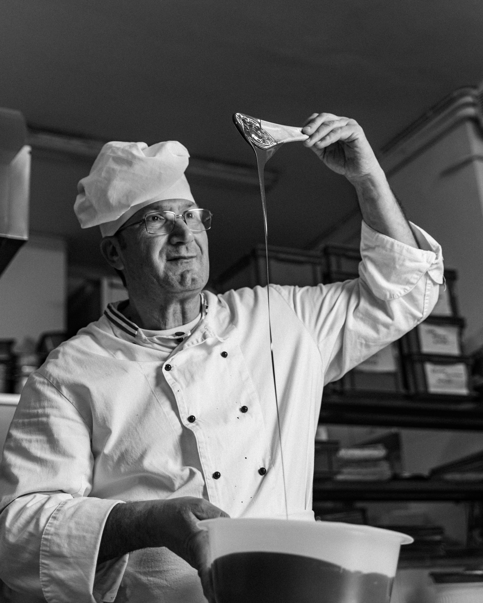
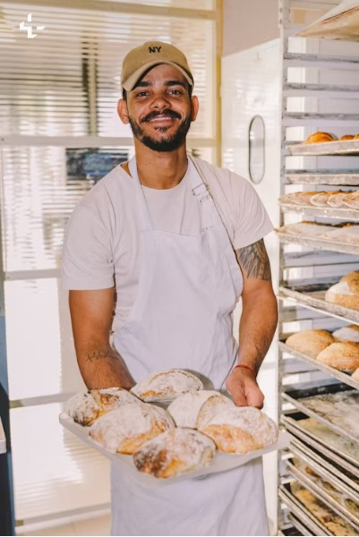

Our Mission
To bring people and communities together through freshly baked, high-quality products made with locally sourced ingredients and genuine care.
Sollie's Bakery
Freshly baked, every day ,in the heart of johannesburg
Sollie's Bakery is a small, family-run bakery established in 2019 in Johannesburg, South Africa. What began as a home-based baking operation selling bread and cupcakes to neighbours has grown into a small storefront serving fresh bread, pastries and custom celebration cakes for the local community. To date, the bakery has relied on word-of-mouth referrals and a basic Facebook page to reach customers — this website marks the next step in bringing that same warmth online.
To bring people and communities together through freshly baked, high-quality products made with locally sourced ingredients and genuine care.
To become the most trusted neighbourhood bakery in Johannesburg, known for consistency, creativity and community involvement.
We proudly serve local residents, working professionals looking for convenient daily bread and pastries, and customers planning birthdays, weddings and corporate events who need custom cakes and catering.

Sollie started baking bread for neighbours in 2019 and has since grown that passion into a full storefront bakery,personally overseeing every custom cake order.

Responsible for the daily pastry selection ,from croissants to Danishes ,Baked fresh every monring before the door opens